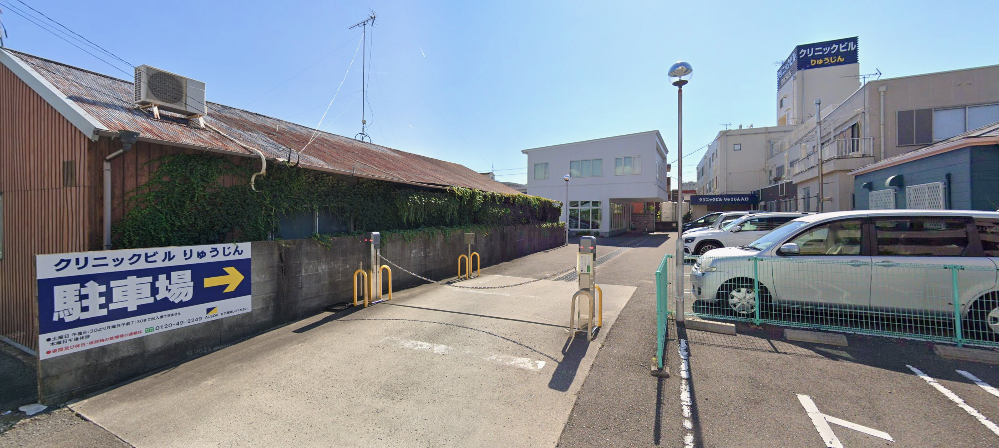

最新のお知らせ
安心・丁寧・誠実な歯科医療を
痛みに配慮した治療、わかりやすい説明、患者さま一人ひとりに寄り添う診療を心がけています。
通い続けたくなる4つの理由

痛みに配慮した、専門性の高い治療
電動麻酔器を使用し、痛みを最小限に抑えた治療を行います。 長年の経験に基づく確かな技術で、安心して治療を受けていただけます。

丁寧でわかりやすい説明
デジタルエックス線を使い、現在の状態を視覚的に説明します。 不安を残さない、誠実で丁寧なカウンセリングを大切にしています。

通いやすい立地
JR宮前駅方面からアクセスしやすく、お車でも通院しやすい立地です。 地域に根ざした歯科医院として、長年多くの患者さまにご来院いただいています。

徹底した清潔管理
治療器具は高圧蒸気滅菌器で処理し、患者さまごとに管理。 清潔で安全な環境づくりを徹底しています。
患者さまに寄り添う歯科医療を

院長 松本啓希
経歴
- 大阪歯科大学歯学部 卒業
- 野上歯科医院 勤務
- 平成12年 松本歯科診療所 開院
お口のトータルケアに対応
虫歯治療
ホワイトニング
歯周病
クリーニング
最新の設備で、より快適な治療を
当院では、患者さまの負担をできるだけ減らし、精密で納得いただける治療をご提供するために、 デジタル設備の導入を進めています。
口腔内スキャナー（光学スキャナー）
お口の中を小型カメラでなぞるだけで、歯やかみ合わせを精密な3Dデータとして記録できる装置です。 粘土のような型取り材を使わないため、「オエッ」となりにくく、快適でスピーディに、 ぴったりと合う詰め物・被せ物やマウスピースを作ることができます。
当院での主な活用シーン
- 虫歯治療の詰め物・被せ物の型取り
- ホワイトニング用マウスピースの製作
- 歯ぎしり・食いしばり用ナイトガードの製作
- かみ合わせ・歯ならびの記録と確認
不快な型取りが不要
粘土のような印象材を使わないので、「オエッ」となりにくく、お子さまや嘔吐反射が苦手な方も楽に受けられます。
痛みなく数分でスキャン
お口の中をカメラでなぞるだけ。痛みはほとんどなく、短時間で精密なデータが取れます。
ぴったり合う仕上がり
高精度の3Dデータで、詰め物・被せ物やマウスピースの適合性が高まり、付け心地も快適になります。
画面で見てわかる説明
スキャンしたお口の状態をその場でモニター表示。ご自身の歯を見ながら、納得して治療を選べます。
衛生的でやさしい
使い捨ての印象材による不快感がなく、デジタルでクリーンに管理。撮り直しや再来院の負担も軽減します。
※ 口腔内スキャナーは導入を予定している設備です。
通いやすい立地と診療時間
診療時間
| 月 | 火 | 水 | 木 | 金 | 土 | 日 | 祝 | |
|---|---|---|---|---|---|---|---|---|
| 9:00〜13:00 | ● | ● | ● | － | ● | ● | － | － |
| 15:00〜19:00 | ● | ● | ● | － | ● | － | － | － |
| 14:00〜17:00 | － | － | － | － | － | ● | － | － |
午後 月火水金 15:00～19:00／土 14:00～17:00
休診日：木・日・祝・年末年始・お盆
所在地
〒641-0008
和歌山県和歌山市北中島１丁目５番１号 クリニックビル２Ｆ
JR宮前駅方面からアクセスしやすい立地です。
駐車場のご案内
お車でお越しの方は、下記の駐車場（クリニックビル りゅうじん 駐車場）をご利用ください。
松本歯科診療所の東側すぐ、徒歩約1分の場所にあります。「駐車場 →」の看板が目印です。

Googleマップで見る